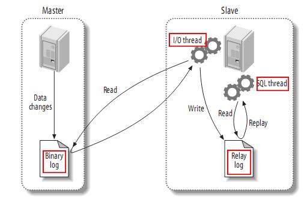

MySQL数据库主从复制技术主要有以下一些特点：
- 数据分布 (Data distribution )
- 负载均衡(load balancing)
- 备份(Backups)
- 高可用性和容错性 (High availability and failover)
- …
利用这些特点完成能实现多种多样的用途
- 实时灾备，作为后备数据库，主数据库服务器故障后，可切换到从数据库继续工作，避免数据丢失。
- 读写分离，提供优质的查询服务。业务量越来越大，I/O访问频率过高，单机无法满足，此时做多库的存储，降低磁盘I/O访问的频率，提高单个机器的I/O性能。
- 备份，避免影响业务
- …
主从形式也是多种多样：
- 一主一从
- 互为主从(主主复制)
- 一主多从
- 多主一从
- …
MySQL主从复制的原理

- master在执行某sql之后，记录二进制log文件(bin-log)。
- 在slave端的IO线程连接上master端后，会请求从指定binlog日志文件的指定pos节点位置(或者从最开始的日志)开始复制之后的日志内容。
- master端在接收到来自slave端的IO线程请求后，通知负责复制进程的IO线程，根据slave端IO线程的请求信息，读取指定 binlog日志指定pos节点位置之后的日志信息，然后返回给slave端的IO线程。该返回信息中除了binlog日志所包含的信息之外，还包括本次返回的信息在master端的binlog文件名以及在该binlog日志中的pos节点位置。
- slave端的IO线程在接收到master端IO返回的信息后，将接收到的binlog日志内容依次写入到slave端的relay log文件(mysql-relay-bin.xxxxxx)的最末端，并将读取到的master端的binlog文件名和pos节点位置记录到master- info（该文件存在slave端）文件中，以便在下一次读取的时候能够清楚的告诉master，我需要从哪个binlog文件的哪个pos节点位置开 始，请把此节点以后的日志内容发给我。
- slave端的SQL线程在检测到relaylog文件中新增内容后，会马上解析该log文件中的内容。然后还原成在master端真实执行的真实SQL语句，并在自身按顺序依次执行这些SQL语句。
MySQL主从复制的缺点
吹了那么多东西，也说说缺点吧！
- 主从间的数据库不是实时同步，就算网络连接正常，也存在瞬间主从数据不一致的情况。
- 如果主从的网络断开，则从库会在网络恢复正常后，批量进行同步。
- 如果对从库进行修改数据，那么如果此时从库正在在执行主库的bin-log时，则会出现错误而停止同步，这个是很危险的操作。所以一般情况下，我们不在从库上修改数据。
注意：
- 一个衍生的配置是双主、互为主从配置，只要双方的修改不冲突，则可以工作良好。
- 如果需要多主库的话，可以用环形配置，这样任意一个节点的修改都可以同步到所有节点。
项目场景
- 主服务器10.10.20.111，其中已经有数据库且库中较多，读写操作频繁。
- 从服务器10.10.20.116，空的啥也没有
由于数据库中数据较多且数据库设计不合理，导致很多SQL慢查询，虽然进行了 SQL慢查询优化 ，但是由于读写频繁，服务器压力大，所以提案了两种方案优化。
- 互为主从并用nginx实现负载
- 读写分离，使用mysql中间件提供负载均衡及连接池
最后选择了配置互为主从并用nginx实现负载均衡。当然我在文章最后也会提供Mysql中间件实现读写分离的方法
mysql主从搭建
准备工作
因为主从服务器需要有相同的初态，所以首先要将主库的数据备份并恢复到从库。
1、将主服务器要同步的数据库加锁，避免同步时数据发生改变
1 | mysql>use db; |
2、将主服务器数据库中数据导出
1 | mysql>mysqldump -uroot -pxxxx db > db.sql; |
这个命令是导出数据库中所有表结构和数据
3、将初始数据导入从服务器数据库
1 | mysql>mysqldump -uroot -pxxxx db < db.sql; |
主服务器配置
1、修改主MySQL配置
1 | nano /etc/mysql/mariadb.conf.d/50-server.cnf |
2、重启MySQL，创建允许从服务器同步数据的账户
1 | #创建slave账号account，密码123456 |
3、查看主服务器状态
1 | mysql>show master status/G; |
从服务器配置
1、修改从MySQL配置
1 | nano /etc/mysql/mariadb.conf.d/50-server.cnf |
2、执行同步命令
1 | #执行同步命令，设置主服务器ip，同步账号密码，同步位置 |
3、查看从服务器状态
1 | mysql>show slave status\G; |
测试主从是否配置成功
1、解锁主服务器数据库
首先解锁主库。
mysql>unlock tables;
然后在主库上创建一张空表，然后在从数据库上查看是否成功同步。
mysql互为主从搭建
0.创建授权用户
1 | #A服务器 |
1.编辑主库配置文件
1 | #主库配置文件 |
2.编辑从库配置文件
1 | #从库配置文件，先关闭二进制日志 |
3.将表导入到从服务器上
1 | mysqldump --databases db --lock-all-tables --master-data=2 > /root/db.sql |
为了防止数据库内容变化，在主数据库导出数据前和从数据库导入数据后，应该对数据库进行加锁。
4.让从库先成为slave
首先查看主库的状态
1 | mysql>show master status/G; |
然后让从库先成为slave
1 | mysql> change master to master_host='10.10.20.111',master_user='account',master_password='123456',master_port=3306,MASTER_LOG_FILE='mysql-bin.000033', MASTER_LOG_POS=337523; |
5.让主库成为slave
1 | #修改从库的配置 |
修改配置完成以后重启从库，然后查看从库的状态
1 | mysql> show master status/G; |
然后让主库成为slave
1 | mysql> change master to master_host='10.10.20.116',master_user='account',master_password='123456',master_port=3306,MASTER_LOG_FILE='mysql-bin.000001', MASTER_LOG_POS=120; |
6.查看主从数据库的状态
主库的状态
1 | mysql> show slave status\G; |
从库的状态
1 | mysql> show slave status\G; |
7.测试互为主从是否成功
首先解锁主库。
1 | mysql>unlock tables; |
然后在主库上创建一张空表，然后在从数据库上查看是否成功同步。
然后在从库上删除这张空表，然后在主数据库上查看是否成功同步。
Nginx实现Mysql负载均衡
读写分离方案（mysql-proxy）
读写分离方案主要解决的是“数据库读性能瓶颈”问题
水平拆分方案主要解决的是“数据库数据量大”问题
垂直拆分方案主要解决的是“数据库多字段引起的表IO”问题
查看Mysql binlog日志
1 | show binlog events\G; |